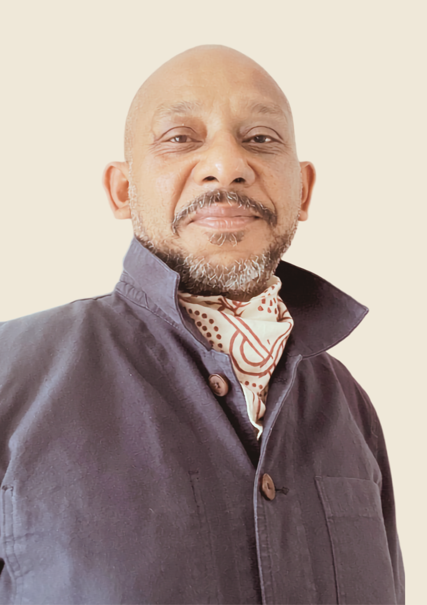

DAX RICAUD
Artist.
Based in Mauritius
Dax Ricaud develops a conceptual practice built through research, gestures, protocols and situations.
According to the needs of each work, it may draw on drawing, painting, photography, video or archival forms. These media are not fixed categories: they become tools when a research project makes them necessary.
Trained in camera work and editing by an institutional filmmaker, he reactivates the still or moving image when it can attest to an action, a time, an absence or a transformation.

THE REGISTER
Giving a state to forms that do not follow a straight line.
The Research Register does not follow a path from ideas to finished works. It also holds forms in progress, resumed, interrupted or transformed.
A state does not judge the work. It makes a mode of existence visible, without forcing research to end in order to be recognised.
CONTACT AND PRESENCES
Start a conversation around a research project.
For an exhibition, an activation, a collaboration or a conversation around the work.
dax@daxricaud.com